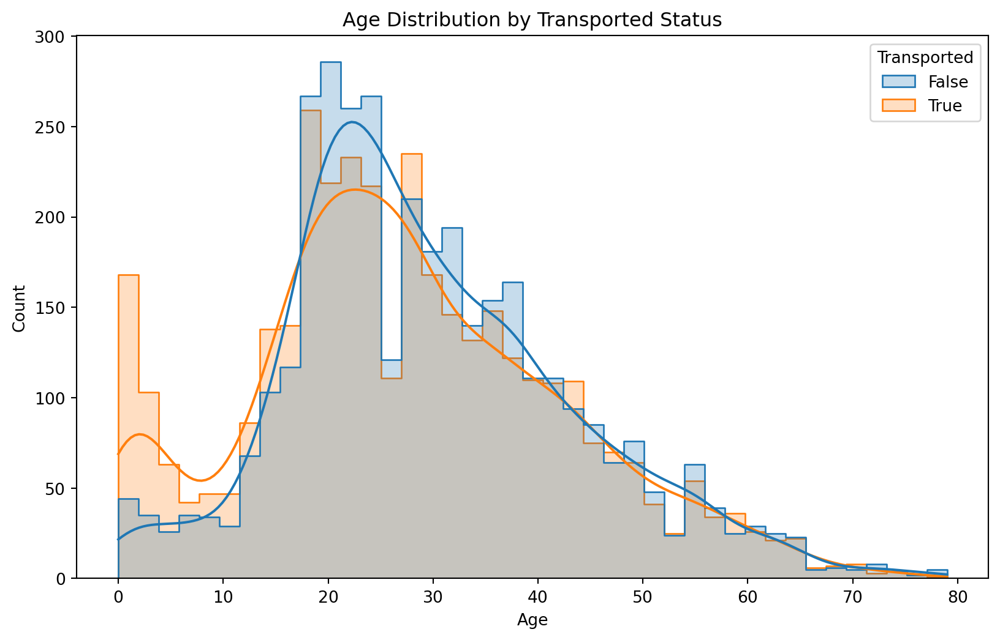

Ezek gyakran speciálisabb hostingot is igényelnek, pl. azért, hogy az interaktív működéshez a szerveren futó Python kód valami komplexebb számítást – pl. predikciót – elvégezzen. Az első épp nem ilyen, azzal csak statikus HTML oldalakat készít.
Érdemes időnként átpörgetni a példákat, hátha véletlenül szembejön valami olyan, ami épp jól alkalmazható az aktuális feladatunknál. Mindegyik link a csomag galériájára mutat.
Adatvizualizációs eszközök
A matplotlib, mint korábban már láttuk, egy alacsony szintű, de sokoldalú eszköz vizualizációk készítésére. A seaborn ezzel szemben egy magasabb szintű eszköz, amely a matplotlib-re épül, és leegyszerűsíti a gyakran használt ábrák elkészítését. Érdemes használni a rutinfeladathoz, mert a korrekt alapértelmezései miatt aránylag gyorsan lehet vele aránylag jó ábrákat készíteni.
Érdemes még megemlíteni a matplotlib egy idekapcsolódó, ritkábban használt funkcióját, a style sheet-eket. Ezekkel a hasonló stílusjegyeket könnyen be lehet állítani minden ábrához.
plt.figure(figsize=(10, 6))sns.histplot(df, x="Age", hue="Transported", kde=True, element="step", stat="count", common_norm=False)plt.title("Age Distribution by Transported Status")plt.show()

Nyomdakész ábrák
Ha nyomdakész ábrákra van szükségünk pl. szakdolgozathoz, publikációhoz, akkor érdemes lehet pdf vagy svg formátumban menteni az ábrákat, mivel ilyenkor vektorgrafikus formátumban kerülnek mentésre, szóval ha belenagyítunk, akkor sem lesznek pixelesek.
Eltérő kontextusban ez akár arra is jó lehet, hogy az elmentett vektorgrafikus ábrát egy másik programmal (pl. Inkscape, Adobe Illustrator, stb.) tovább szerkesszük.
Interaktív vizualizációk
Az interaktív vizualizációk terén nem igazán alakult egyetlen domináns eszköz, jelenleg a gyorslinkek között felsorolt eszközök a legismertebbek.
A plotly egy viszonylag könnyen használható könyvtár, de azért összetettebb ábrákat készíteni már nem mindig annyira egyszerű vele. LLM-ek gyakran tudnak ebben is segíteni – csakúgy mint a korábbiak esetében is –, de a dokumentációt, valamint a példákat is érdemes nézegetni.
A plotly.express hasonlóan viszonyul a plotly-hoz, mint a seaborn a matplotlib-hez: egy magasabb szintű API, amely leegyszerűsíti a gyakran használt ábrák elkészítését.
A korábban már linkelt galériát érdemes végiggörgetni, néhányat kipróbálni. Egy nagyon egyszerű illusztráció:
A fentiek mind a Quarto nevű csomaggal készültek, amivel statikus HTML oldalakat lehet készíteni. Egyszerűen használható, az első dashboardot pl. ezzel a rövid kóddal lehet előállítani.
Ennél többet nem fog előkerülni ez a téma, de a dokumentáció, illetve a példák jól használhatók. Ha valakit érdekel ez a lehetőség a projektben, akkor szívesen segítek majd külön, ha esetleg elakad. (Egyébként a honlapra kikerült Notebookokat is ezzel a csomaggal készültek.)